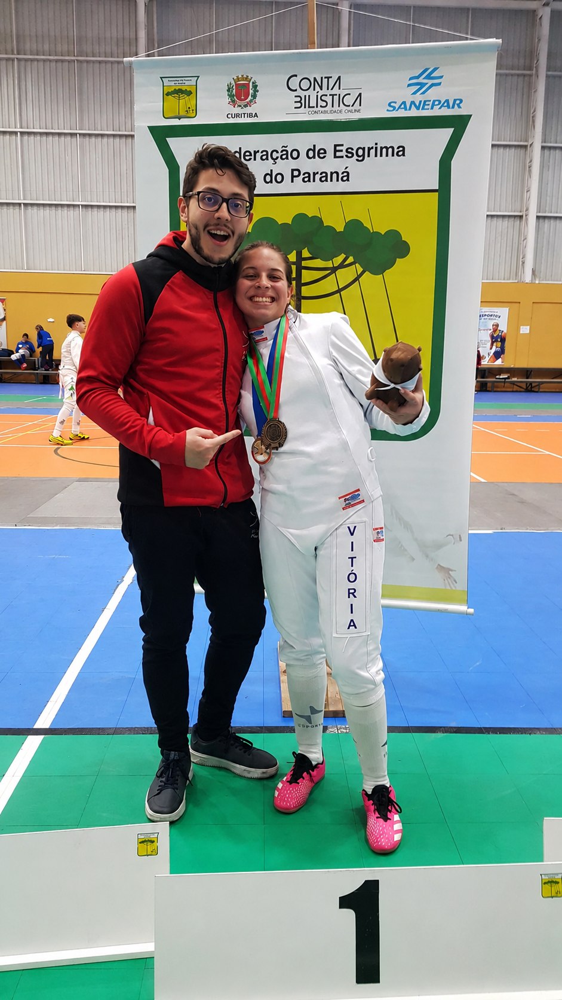

Meu nome é Hillary Vitória Porto Trevizan, tenho 18 anos e sou atleta de esgrima e estudante de Educação Física na Universidade Tecnológica Federal do Paraná. A esgrima faz parte da minha vida desde os 10 anos de idade e, desde então, venho construindo uma trajetória marcada por dedicação, disciplina e evolução constante. Atualmente participo de competições e possuo classificação nos rankings paranaense, nacional e mundial. Conheça mais sobre minha história, meus treinos e minha jornada no esporte.
Saiba Mais